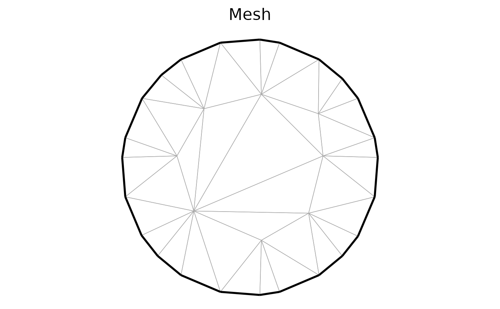

Plot the spatial mesh. Forked from inlabru::gg.fm_mesh_2d https://github.com/inlabru-org/inlabru/blob/53ac741a5dba72c2bd33706fda48a149f0d8d9a9/R/ggplot.R#L750
plot_mesh(
data,
title,
color = NULL,
alpha = NULL,
edge.color = "darkgrey",
edge.linewidth = 0.25,
interior = TRUE,
int.color = "blue",
int.linewidth = 0.5,
exterior = TRUE,
ext.color = "black",
ext.linewidth = 1,
crs = NULL,
mask = NULL,
nx = 500,
ny = 500,
...
)An fm_mesh_2d object.
Character to describe the plot
A vector of scalar values to fill the mesh with colors.
The length of the vector mus correspond to the number of mesh vertices.
The alternative name colour is also recognised.
A vector of scalar values setting the alpha value of the colors provided.
Color of the regular mesh edges.
Line width for the regular mesh edges. Default 0.25
If TRUE, plot the interior boundaries of the mesh.
Color used to plot the interior constraint edges.
Line width for the interior constraint edges. Default 0.5
If TRUE, plot the exterior boundaries of the mesh.
Color used to plot the exterior boundary edges.
Line width for the exterior boundary edges. Default 1
A CRS object supported by fmesher::fm_transform() defining the coordinate
system to project the mesh to before plotting.
A SpatialPolygon or sf polygon defining the region that is plotted.
Number of pixels in x direction (when plotting using the color parameter).
Number of pixels in y direction (when plotting using the color parameter).
ignored arguments (S3 generic compatibility).
ggplot object
mesh <- fmesher::fm_mesh_2d_inla(boundary = fmesher::fm_extensions(cbind(2, 1), convex = 1, 2))
plot_mesh(mesh, "Mesh")
